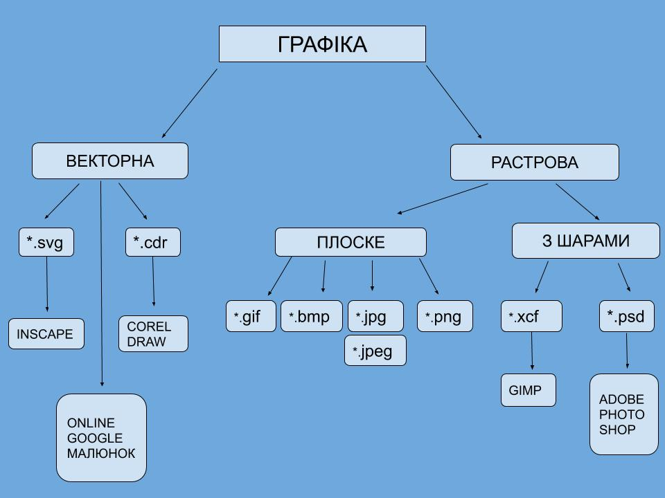
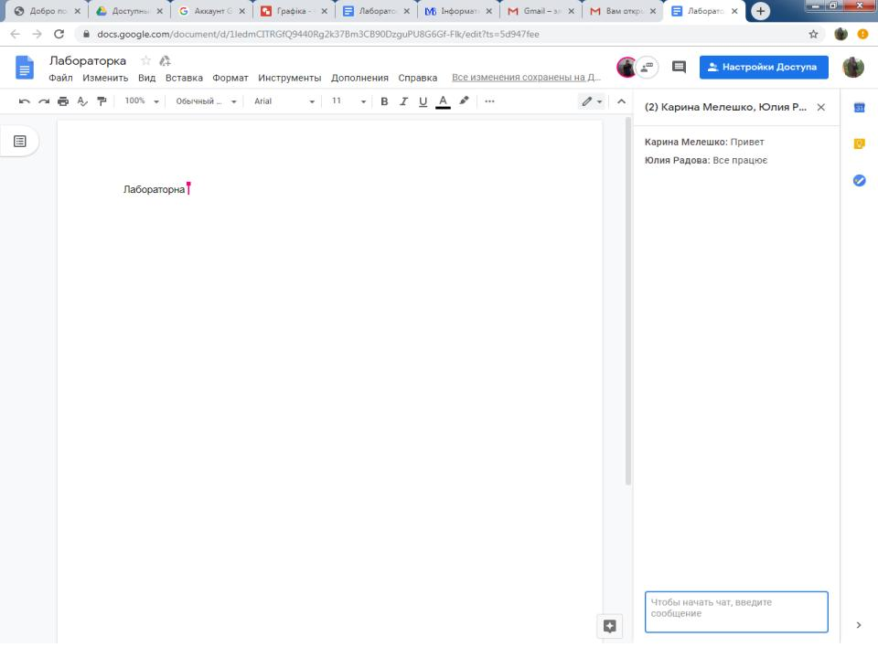

Сайт-звіт до лабораторної роботи №3. Тема - Спільний доступ до дукументів.Google Диск.OneDrive.Робота з Goole Малюнком. Таблиця
2. 1. Налаштувати спільний доступ для редагування та коментування до документу на Google Диск, OneDrive
2. Розібратись з питанням створення коментарів
3. Зробити копію екрану, що підтверджує виконання роботи
4. В Google Малюнку створити малюнок з поясненнями
5. В Google Малюнку створити малюнок з таблицею роботи з графічними об’єктами
6. Надати у якості відповіді на тему посилання на 2 звітніх малюнка
3. 


4. Посилання на Гугл диск Коментар
4. Посилання на Гугл диск Доступ